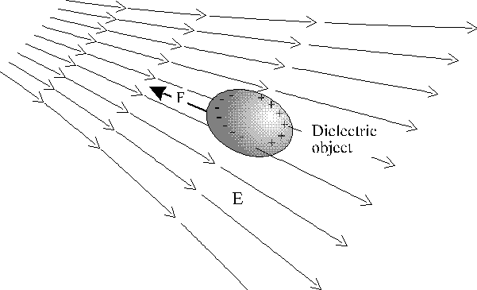
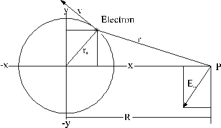
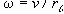
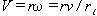
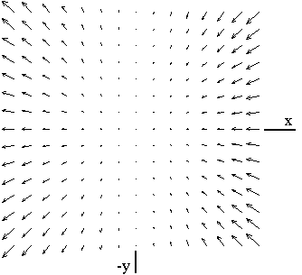
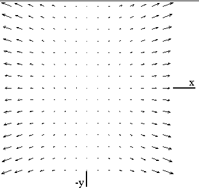
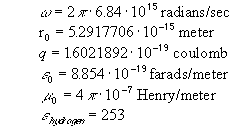

Most textbooks in physics describe how a piece of paper or a neutral dielectric object can be picked up with a charged glass rod. This is the divergent electrical field at work. It polarizes and generates a net attraction on the dielectric object. A dielectric object is always drawn away from a region of a weak field towards a region of a strong field, as seen in figure 6. The polarity of the field does not affect the direction of the force.

Figure 6. A non-uniform electrical field will generate a net attractive force on a neutral piece of matter. The force is directed toward the region of higher field strength.
The net force on the dielectric is proportional to the gradient of the square of the field times the volume of the dielectric (P. Lorrain and D. Corson), given by :
where Vedv is the effective dielectric volume, is the permittivity constant and is the dielectric constant for hydrogen. We do not know the effective dielectric volume for a single hydrogen atom, but we can estimate it by using the classical size for the Bohr atom and adjust the radius with a factor kedv:
We can calculate the divergent Em field from a hydrogen atom due to the motion of the electron charge. Knowing the magnitude and divergence of the Em field, we can find the force that pulls on a nearby atom, in accordance with Eq. (5.0).
In view of quantum mechanics, the Bohr model is an over-simplification. However, as we will see, this approach offers some insights into the nature and magnitude of the force generated by the divergent motional electric field. It is very much like Feynman's calculation of the atomic magnetic moment using classical mechanics (Feynman) that turns out to be quite accurate

Figure 7. An orbital electron with a linear velocity v is producing a motional electric field Em at P.
The magnetic field from an orbital electron is found by using the Biot-Savart law:
r is the radius vector from q to a point P where B is measured, and ve is the electron velocity. Since the electron revolves at a radial frequency

, the B-field velocity, V at a distance r can be calculated as
.The motional electric field Em is then found by inserting Eq. (5.2) into Eq. (2.3):
By expanding and simplifying Eq. (5.3) we get a large symbolic expression. Figure 5 shows a plot of the Em vector fields around the hydrogen nucleus according to such a formula. The plot shows that the x-components of the vectors are always in the same direction, regardless of the electron position about the nucleus. It can also be seen that all y-components are opposite, in the upper and lower quadrants. Assuming a full uniform circular orbit of the electron, the y-components will cancel while the x-components will add. For a full revolution, the hydrogen atom will generate a net Em field in the negative x-axis direction - measured at point P.

Figure 8. The 2-dimensional vector plot of the motional electric field - produced by the orbital electron around the hydrogen nucleus. All measurements are done at a stationary point P, with x=1 meter and y=0 from the nucleus.
It is worth noting that the electron spin itself does also generate a motional electric field. This effect will be ignored in our discussion since it can be shown that it falls off faster than the motional electric field produced by the circulating electron. It may be speculated that the motional electric fields generated by spinning elementary particles has some relationship to nuclear forces, but this is not discussed here.
Since a hydrogen atom can be considered a tiny dielectric, it is attracted towards the source of a diverging Em field. We can calculate the instantaneous force generated by the diverging Em field from Eq. (5.0). The instantaneous force for various positions of the moving electron is plotted in figure 9. Assuming that the y-components will cancel we can find the sum of the x-components. When measured at point P, the sum of all the x-vectors will not completely cancel, due to a small difference in magnitude between distance R+x and R-x.
Mathematically, the dielectric force produced by a single atom acting on another dielectric atom can be found by integrating one revolution of the moving electron (ignoring the y and z components, for now) by using Eq. (5.0):
where and alpha is the angle of the electron to the x-axis and r0 is the electron radius.

Figure 9. A 2-dimensional vector plot of the instantaneous dielectric force, produced by an electron moving around the nucleus of a hydrogen atom. All measurements are done at point P with x=1 meter and y=0.
The expanded equation is large and is not easy to simplify symbolically. However, the equation can be calculated numerically by computer. We will use the following constants:

We arbitrarily adjust the volume for a single hydrogen atom from Eq. (5.1) by setting kvol=1/1000 . By using Eq. (5.4), we then can find the dielectric force between two hydrogen atoms to be: